Backward-selected mixed-effects models for log he/she odds. Positive estimates shift predictions toward "he"; negative estimates shift them toward "she". Generated on 2026-07-20.
Best expanded random-slope model per target model.
| Model | Selected model | Converged | Optimizer | N | AIC | BIC | Log likelihood | Marginal R2 | Conditional R2 | Residual variance |
|---|---|---|---|---|---|---|---|---|---|---|
| Qwen_Qwen3-4B-Base | selected mixed random slopes | True | lbfgs | 6720 | 7355.178 | 7648.130 | -3634.589 | 0.021 | 0.902 | 0.167 |
| allenai_Olmo-3-1025-7B | selected mixed random slopes candidate 0 C syntactic role C dominance | True | lbfgs | 6720 | 6969.468 | 7255.608 | -3442.734 | 0.030 | 0.909 | 0.158 |
| google_gemma-3-4b-pt | selected mixed random slopes | True | lbfgs | 6720 | 4523.552 | 4809.692 | -2219.776 | 0.031 | 0.947 | 0.110 |
| gpt2 | selected mixed random slopes | True | lbfgs | 6720 | 2096.731 | 2382.870 | -1006.365 | 0.019 | 0.905 | 0.076 |
| mistralai_Mistral-7B-v0.3 | selected mixed random slopes candidate 0 C valence C dominance | True | lbfgs | 6720 | 5524.240 | 5810.379 | -2720.120 | 0.030 | 0.920 | 0.128 |
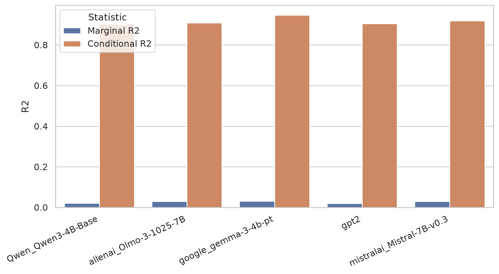
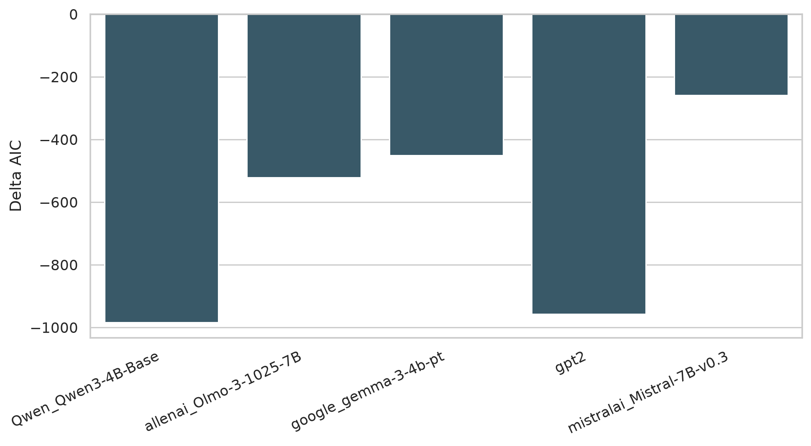
| Model | Candidate | Variant | Converged | AIC | Delta AIC | BIC | Marginal R2 | Conditional R2 | Formula | Random formula |
|---|---|---|---|---|---|---|---|---|---|---|
| Qwen_Qwen3-4B-Base | selected_mixed_random_slopes | random_slopes | True | 7355.178 | 0.000 | 7648.130 | 0.021 | 0.902 | log_he_she_odds ~ C(tense) + C(syntactic_role) + C(valence) + C(dominance) + C(tense):C(syntactic_role) + C(tense):C(valence) + C(tense):C(dominance) + C(syntactic_role):C(valence) + C(syntactic_role):C(dominance) + C(valence):C(dominance) | 1 + C(semantic_role) + C(syntactic_role) + C(valence) + C(dominance) |
| Qwen_Qwen3-4B-Base | selected_mixed_random_slopes__full | random_slopes | True | 7355.178 | 0.000 | 7648.130 | 0.021 | 0.902 | log_he_she_odds ~ C(tense) + C(syntactic_role) + C(valence) + C(dominance) + C(tense):C(syntactic_role) + C(tense):C(valence) + C(tense):C(dominance) + C(syntactic_role):C(valence) + C(syntactic_role):C(dominance) + C(valence):C(dominance) | 1 + C(semantic_role) + C(syntactic_role) + C(valence) + C(dominance) |
| Qwen_Qwen3-4B-Base | selected_mixed_random_slopes__candidate__0__C_tense_C_dominance | random_slopes | True | 7358.974 | 3.796 | 7617.862 | 0.020 | 0.900 | log_he_she_odds ~ C(tense) + C(syntactic_role) + C(valence) + C(dominance) + C(tense):C(syntactic_role) + C(tense):C(valence) + C(syntactic_role):C(valence) + C(syntactic_role):C(dominance) + C(valence):C(dominance) | 1 + C(semantic_role) + C(syntactic_role) + C(valence) + C(dominance) |
| Qwen_Qwen3-4B-Base | selected_mixed_random_slopes__candidate__0__C_syntactic_role_C_dominance | random_slopes | True | 7362.457 | 7.279 | 7648.597 | 0.020 | 0.902 | log_he_she_odds ~ C(tense) + C(syntactic_role) + C(valence) + C(dominance) + C(tense):C(syntactic_role) + C(tense):C(valence) + C(tense):C(dominance) + C(syntactic_role):C(valence) + C(valence):C(dominance) | 1 + C(semantic_role) + C(syntactic_role) + C(valence) + C(dominance) |
| Qwen_Qwen3-4B-Base | selected_mixed_random_slopes__candidate__0__C_syntactic_role_C_valence | random_slopes | True | 7364.228 | 9.050 | 7650.368 | 0.020 | 0.901 | log_he_she_odds ~ C(tense) + C(syntactic_role) + C(valence) + C(dominance) + C(tense):C(syntactic_role) + C(tense):C(valence) + C(tense):C(dominance) + C(syntactic_role):C(dominance) + C(valence):C(dominance) | 1 + C(semantic_role) + C(syntactic_role) + C(valence) + C(dominance) |
| Qwen_Qwen3-4B-Base | selected_mixed_random_slopes__candidate__0__C_tense_C_valence | random_slopes | True | 7376.395 | 21.217 | 7635.283 | 0.022 | 0.891 | log_he_she_odds ~ C(tense) + C(syntactic_role) + C(valence) + C(dominance) + C(tense):C(syntactic_role) + C(tense):C(dominance) + C(syntactic_role):C(valence) + C(syntactic_role):C(dominance) + C(valence):C(dominance) | 1 + C(semantic_role) + C(syntactic_role) + C(valence) + C(dominance) |
| Qwen_Qwen3-4B-Base | selected_mixed_random_slopes__candidate__0__C_tense_C_syntactic_role | random_slopes | True | 7377.150 | 21.972 | 7636.038 | 0.022 | 0.892 | log_he_she_odds ~ C(tense) + C(syntactic_role) + C(valence) + C(dominance) + C(tense):C(valence) + C(tense):C(dominance) + C(syntactic_role):C(valence) + C(syntactic_role):C(dominance) + C(valence):C(dominance) | 1 + C(semantic_role) + C(syntactic_role) + C(valence) + C(dominance) |
| Qwen_Qwen3-4B-Base | selected_mixed_random_slopes__candidate__0__C_valence_C_dominance | random_slopes | False | 7551.940 | 196.762 | 7838.080 | 0.019 | 0.883 | log_he_she_odds ~ C(tense) + C(syntactic_role) + C(valence) + C(dominance) + C(tense):C(syntactic_role) + C(tense):C(valence) + C(tense):C(dominance) + C(syntactic_role):C(valence) + C(syntactic_role):C(dominance) | 1 + C(semantic_role) + C(syntactic_role) + C(valence) + C(dominance) |
| allenai_Olmo-3-1025-7B | selected_mixed_random_slopes__candidate__0__C_syntactic_role_C_dominance | random_slopes | True | 6969.468 | 0.000 | 7255.608 | 0.030 | 0.909 | log_he_she_odds ~ C(tense) + C(syntactic_role) + C(valence) + C(dominance) + C(tense):C(syntactic_role) + C(tense):C(valence) + C(tense):C(dominance) + C(syntactic_role):C(valence) + C(valence):C(dominance) | 1 + C(semantic_role) + C(syntactic_role) + C(valence) + C(dominance) |
| allenai_Olmo-3-1025-7B | selected_mixed_random_slopes | random_slopes | True | 6970.806 | 1.337 | 7250.132 | 0.030 | 0.909 | log_he_she_odds ~ C(tense) + C(syntactic_role) + C(valence) + C(dominance) + C(tense):C(syntactic_role) + C(tense):C(valence) + C(tense):C(dominance) + C(valence):C(dominance) | 1 + C(semantic_role) + C(syntactic_role) + C(valence) + C(dominance) |
| allenai_Olmo-3-1025-7B | selected_mixed_random_slopes__candidate__1__C_syntactic_role_C_valence | random_slopes | True | 6970.806 | 1.337 | 7250.132 | 0.030 | 0.909 | log_he_she_odds ~ C(tense) + C(syntactic_role) + C(valence) + C(dominance) + C(tense):C(syntactic_role) + C(tense):C(valence) + C(tense):C(dominance) + C(valence):C(dominance) | 1 + C(semantic_role) + C(syntactic_role) + C(valence) + C(dominance) |
| allenai_Olmo-3-1025-7B | selected_mixed_random_slopes__full | random_slopes | True | 6971.468 | 2.000 | 7264.421 | 0.030 | 0.909 | log_he_she_odds ~ C(tense) + C(syntactic_role) + C(valence) + C(dominance) + C(tense):C(syntactic_role) + C(tense):C(valence) + C(tense):C(dominance) + C(syntactic_role):C(valence) + C(syntactic_role):C(dominance) + C(valence):C(dominance) | 1 + C(semantic_role) + C(syntactic_role) + C(valence) + C(dominance) |
| allenai_Olmo-3-1025-7B | selected_mixed_random_slopes__candidate__0__C_syntactic_role_C_valence | random_slopes | True | 6972.806 | 3.337 | 7258.945 | 0.030 | 0.909 | log_he_she_odds ~ C(tense) + C(syntactic_role) + C(valence) + C(dominance) + C(tense):C(syntactic_role) + C(tense):C(valence) + C(tense):C(dominance) + C(syntactic_role):C(dominance) + C(valence):C(dominance) | 1 + C(semantic_role) + C(syntactic_role) + C(valence) + C(dominance) |
| allenai_Olmo-3-1025-7B | selected_mixed_random_slopes__candidate__1__C_valence_C_dominance | random_slopes | True | 6985.896 | 16.428 | 7265.223 | 0.030 | 0.908 | log_he_she_odds ~ C(tense) + C(syntactic_role) + C(valence) + C(dominance) + C(tense):C(syntactic_role) + C(tense):C(valence) + C(tense):C(dominance) + C(syntactic_role):C(valence) | 1 + C(semantic_role) + C(syntactic_role) + C(valence) + C(dominance) |
| allenai_Olmo-3-1025-7B | selected_mixed_random_slopes__candidate__2__C_valence_C_dominance | random_slopes | True | 6987.224 | 17.756 | 7259.738 | 0.030 | 0.908 | log_he_she_odds ~ C(tense) + C(syntactic_role) + C(valence) + C(dominance) + C(tense):C(syntactic_role) + C(tense):C(valence) + C(tense):C(dominance) | 1 + C(semantic_role) + C(syntactic_role) + C(valence) + C(dominance) |
| allenai_Olmo-3-1025-7B | selected_mixed_random_slopes__candidate__1__C_tense_C_valence | random_slopes | True | 6987.782 | 18.313 | 7239.857 | 0.030 | 0.908 | log_he_she_odds ~ C(tense) + C(syntactic_role) + C(valence) + C(dominance) + C(tense):C(syntactic_role) + C(tense):C(dominance) + C(syntactic_role):C(valence) + C(valence):C(dominance) | 1 + C(semantic_role) + C(syntactic_role) + C(valence) + C(dominance) |
| google_gemma-3-4b-pt | selected_mixed_random_slopes | random_slopes | True | 4523.552 | 0.000 | 4809.692 | 0.031 | 0.947 | log_he_she_odds ~ C(tense) + C(syntactic_role) + C(valence) + C(dominance) + C(tense):C(syntactic_role) + C(tense):C(valence) + C(tense):C(dominance) + C(syntactic_role):C(valence) + C(valence):C(dominance) | 1 + C(semantic_role) + C(syntactic_role) + C(valence) + C(dominance) |
| google_gemma-3-4b-pt | selected_mixed_random_slopes__candidate__0__C_syntactic_role_C_dominance | random_slopes | True | 4523.552 | 0.000 | 4809.692 | 0.031 | 0.947 | log_he_she_odds ~ C(tense) + C(syntactic_role) + C(valence) + C(dominance) + C(tense):C(syntactic_role) + C(tense):C(valence) + C(tense):C(dominance) + C(syntactic_role):C(valence) + C(valence):C(dominance) | 1 + C(semantic_role) + C(syntactic_role) + C(valence) + C(dominance) |
| google_gemma-3-4b-pt | selected_mixed_random_slopes__full | random_slopes | True | 4524.628 | 1.076 | 4817.581 | 0.031 | 0.947 | log_he_she_odds ~ C(tense) + C(syntactic_role) + C(valence) + C(dominance) + C(tense):C(syntactic_role) + C(tense):C(valence) + C(tense):C(dominance) + C(syntactic_role):C(valence) + C(syntactic_role):C(dominance) + C(valence):C(dominance) | 1 + C(semantic_role) + C(syntactic_role) + C(valence) + C(dominance) |
| google_gemma-3-4b-pt | selected_mixed_random_slopes__candidate__1__C_tense_C_dominance | random_slopes | True | 4542.412 | 18.859 | 4794.487 | 0.031 | 0.947 | log_he_she_odds ~ C(tense) + C(syntactic_role) + C(valence) + C(dominance) + C(tense):C(syntactic_role) + C(tense):C(valence) + C(syntactic_role):C(valence) + C(valence):C(dominance) | 1 + C(semantic_role) + C(syntactic_role) + C(valence) + C(dominance) |
| google_gemma-3-4b-pt | selected_mixed_random_slopes__candidate__0__C_tense_C_dominance | random_slopes | True | 4543.492 | 19.940 | 4802.380 | 0.031 | 0.947 | log_he_she_odds ~ C(tense) + C(syntactic_role) + C(valence) + C(dominance) + C(tense):C(syntactic_role) + C(tense):C(valence) + C(syntactic_role):C(valence) + C(syntactic_role):C(dominance) + C(valence):C(dominance) | 1 + C(semantic_role) + C(syntactic_role) + C(valence) + C(dominance) |
| google_gemma-3-4b-pt | selected_mixed_random_slopes__candidate__1__C_syntactic_role_C_valence | random_slopes | True | 4554.325 | 30.773 | 4833.652 | 0.030 | 0.947 | log_he_she_odds ~ C(tense) + C(syntactic_role) + C(valence) + C(dominance) + C(tense):C(syntactic_role) + C(tense):C(valence) + C(tense):C(dominance) + C(valence):C(dominance) | 1 + C(semantic_role) + C(syntactic_role) + C(valence) + C(dominance) |
| google_gemma-3-4b-pt | selected_mixed_random_slopes__candidate__0__C_syntactic_role_C_valence | random_slopes | True | 4555.406 | 31.854 | 4841.545 | 0.030 | 0.947 | log_he_she_odds ~ C(tense) + C(syntactic_role) + C(valence) + C(dominance) + C(tense):C(syntactic_role) + C(tense):C(valence) + C(tense):C(dominance) + C(syntactic_role):C(dominance) + C(valence):C(dominance) | 1 + C(semantic_role) + C(syntactic_role) + C(valence) + C(dominance) |
| google_gemma-3-4b-pt | selected_mixed_random_slopes__candidate__1__C_tense_C_valence | random_slopes | True | 4555.932 | 32.380 | 4808.008 | 0.030 | 0.947 | log_he_she_odds ~ C(tense) + C(syntactic_role) + C(valence) + C(dominance) + C(tense):C(syntactic_role) + C(tense):C(dominance) + C(syntactic_role):C(valence) + C(valence):C(dominance) | 1 + C(semantic_role) + C(syntactic_role) + C(valence) + C(dominance) |
| gpt2 | selected_mixed_random_slopes | random_slopes | True | 2096.731 | 0.000 | 2382.870 | 0.019 | 0.905 | log_he_she_odds ~ C(tense) + C(syntactic_role) + C(valence) + C(dominance) + C(tense):C(syntactic_role) + C(tense):C(valence) + C(tense):C(dominance) + C(syntactic_role):C(valence) + C(valence):C(dominance) | 1 + C(semantic_role) + C(syntactic_role) + C(valence) + C(dominance) |
| gpt2 | selected_mixed_random_slopes__candidate__0__C_syntactic_role_C_dominance | random_slopes | True | 2096.731 | 0.000 | 2382.870 | 0.019 | 0.905 | log_he_she_odds ~ C(tense) + C(syntactic_role) + C(valence) + C(dominance) + C(tense):C(syntactic_role) + C(tense):C(valence) + C(tense):C(dominance) + C(syntactic_role):C(valence) + C(valence):C(dominance) | 1 + C(semantic_role) + C(syntactic_role) + C(valence) + C(dominance) |
| gpt2 | selected_mixed_random_slopes__full | random_slopes | True | 2097.866 | 1.135 | 2390.818 | 0.020 | 0.904 | log_he_she_odds ~ C(tense) + C(syntactic_role) + C(valence) + C(dominance) + C(tense):C(syntactic_role) + C(tense):C(valence) + C(tense):C(dominance) + C(syntactic_role):C(valence) + C(syntactic_role):C(dominance) + C(valence):C(dominance) | 1 + C(semantic_role) + C(syntactic_role) + C(valence) + C(dominance) |
| gpt2 | selected_mixed_random_slopes__candidate__1__C_syntactic_role_C_valence | random_slopes | True | 2099.479 | 2.748 | 2378.805 | 0.019 | 0.906 | log_he_she_odds ~ C(tense) + C(syntactic_role) + C(valence) + C(dominance) + C(tense):C(syntactic_role) + C(tense):C(valence) + C(tense):C(dominance) + C(valence):C(dominance) | 1 + C(semantic_role) + C(syntactic_role) + C(valence) + C(dominance) |
| gpt2 | selected_mixed_random_slopes__candidate__0__C_syntactic_role_C_valence | random_slopes | True | 2100.699 | 3.968 | 2386.838 | 0.019 | 0.906 | log_he_she_odds ~ C(tense) + C(syntactic_role) + C(valence) + C(dominance) + C(tense):C(syntactic_role) + C(tense):C(valence) + C(tense):C(dominance) + C(syntactic_role):C(dominance) + C(valence):C(dominance) | 1 + C(semantic_role) + C(syntactic_role) + C(valence) + C(dominance) |
| gpt2 | selected_mixed_random_slopes__candidate__1__C_tense_C_valence | random_slopes | True | 2117.440 | 20.709 | 2369.515 | 0.019 | 0.904 | log_he_she_odds ~ C(tense) + C(syntactic_role) + C(valence) + C(dominance) + C(tense):C(syntactic_role) + C(tense):C(dominance) + C(syntactic_role):C(valence) + C(valence):C(dominance) | 1 + C(semantic_role) + C(syntactic_role) + C(valence) + C(dominance) |
| gpt2 | selected_mixed_random_slopes__candidate__1__C_tense_C_dominance | random_slopes | True | 2117.654 | 20.923 | 2369.729 | 0.019 | 0.904 | log_he_she_odds ~ C(tense) + C(syntactic_role) + C(valence) + C(dominance) + C(tense):C(syntactic_role) + C(tense):C(valence) + C(syntactic_role):C(valence) + C(valence):C(dominance) | 1 + C(semantic_role) + C(syntactic_role) + C(valence) + C(dominance) |
| gpt2 | selected_mixed_random_slopes__candidate__0__C_tense_C_valence | random_slopes | True | 2118.554 | 21.823 | 2377.442 | 0.019 | 0.904 | log_he_she_odds ~ C(tense) + C(syntactic_role) + C(valence) + C(dominance) + C(tense):C(syntactic_role) + C(tense):C(dominance) + C(syntactic_role):C(valence) + C(syntactic_role):C(dominance) + C(valence):C(dominance) | 1 + C(semantic_role) + C(syntactic_role) + C(valence) + C(dominance) |
| mistralai_Mistral-7B-v0.3 | selected_mixed_random_slopes__candidate__0__C_valence_C_dominance | random_slopes | True | 5524.240 | 0.000 | 5810.379 | 0.030 | 0.920 | log_he_she_odds ~ C(tense) + C(syntactic_role) + C(valence) + C(dominance) + C(tense):C(syntactic_role) + C(tense):C(valence) + C(tense):C(dominance) + C(syntactic_role):C(valence) + C(syntactic_role):C(dominance) | 1 + C(semantic_role) + C(syntactic_role) + C(valence) + C(dominance) |
| mistralai_Mistral-7B-v0.3 | selected_mixed_random_slopes__full | random_slopes | True | 5524.362 | 0.122 | 5817.315 | 0.030 | 0.920 | log_he_she_odds ~ C(tense) + C(syntactic_role) + C(valence) + C(dominance) + C(tense):C(syntactic_role) + C(tense):C(valence) + C(tense):C(dominance) + C(syntactic_role):C(valence) + C(syntactic_role):C(dominance) + C(valence):C(dominance) | 1 + C(semantic_role) + C(syntactic_role) + C(valence) + C(dominance) |
| mistralai_Mistral-7B-v0.3 | selected_mixed_random_slopes | random_slopes | True | 5526.051 | 1.811 | 5805.377 | 0.029 | 0.920 | log_he_she_odds ~ C(tense) + C(syntactic_role) + C(valence) + C(dominance) + C(tense):C(syntactic_role) + C(tense):C(valence) + C(tense):C(dominance) + C(syntactic_role):C(valence) | 1 + C(semantic_role) + C(syntactic_role) + C(valence) + C(dominance) |
| mistralai_Mistral-7B-v0.3 | selected_mixed_random_slopes__candidate__1__C_syntactic_role_C_dominance | random_slopes | True | 5526.051 | 1.811 | 5805.377 | 0.029 | 0.920 | log_he_she_odds ~ C(tense) + C(syntactic_role) + C(valence) + C(dominance) + C(tense):C(syntactic_role) + C(tense):C(valence) + C(tense):C(dominance) + C(syntactic_role):C(valence) | 1 + C(semantic_role) + C(syntactic_role) + C(valence) + C(dominance) |
| mistralai_Mistral-7B-v0.3 | selected_mixed_random_slopes__candidate__0__C_syntactic_role_C_dominance | random_slopes | True | 5526.174 | 1.934 | 5812.314 | 0.030 | 0.920 | log_he_she_odds ~ C(tense) + C(syntactic_role) + C(valence) + C(dominance) + C(tense):C(syntactic_role) + C(tense):C(valence) + C(tense):C(dominance) + C(syntactic_role):C(valence) + C(valence):C(dominance) | 1 + C(semantic_role) + C(syntactic_role) + C(valence) + C(dominance) |
| mistralai_Mistral-7B-v0.3 | selected_mixed_random_slopes__candidate__1__C_tense_C_valence | random_slopes | True | 5540.014 | 15.774 | 5792.090 | 0.029 | 0.919 | log_he_she_odds ~ C(tense) + C(syntactic_role) + C(valence) + C(dominance) + C(tense):C(syntactic_role) + C(tense):C(dominance) + C(syntactic_role):C(valence) + C(syntactic_role):C(dominance) | 1 + C(semantic_role) + C(syntactic_role) + C(valence) + C(dominance) |
| mistralai_Mistral-7B-v0.3 | selected_mixed_random_slopes__candidate__0__C_tense_C_valence | random_slopes | True | 5540.144 | 15.904 | 5799.032 | 0.029 | 0.919 | log_he_she_odds ~ C(tense) + C(syntactic_role) + C(valence) + C(dominance) + C(tense):C(syntactic_role) + C(tense):C(dominance) + C(syntactic_role):C(valence) + C(syntactic_role):C(dominance) + C(valence):C(dominance) | 1 + C(semantic_role) + C(syntactic_role) + C(valence) + C(dominance) |
| mistralai_Mistral-7B-v0.3 | selected_mixed_random_slopes__candidate__2__C_tense_C_valence | random_slopes | True | 5541.811 | 17.571 | 5787.073 | 0.029 | 0.919 | log_he_she_odds ~ C(tense) + C(syntactic_role) + C(valence) + C(dominance) + C(tense):C(syntactic_role) + C(tense):C(dominance) + C(syntactic_role):C(valence) | 1 + C(semantic_role) + C(syntactic_role) + C(valence) + C(dominance) |
The baseline fit uses the selected fixed effects with a random intercept only. The expanded fit adds the selected random-slope structure on top of that same baseline.
| Model | Baseline conditional R2 | Expanded conditional R2 | Delta conditional R2 | Baseline AIC | Expanded AIC | Delta AIC | Baseline random effects | Expanded random effects |
|---|---|---|---|---|---|---|---|---|
| Qwen_Qwen3-4B-Base | 0.838 | 0.902 | 0.064 | 8338.284 | 7355.178 | -983.106 | 1 | 1 + C(semantic_role) + C(syntactic_role) + C(valence) + C(dominance) |
| allenai_Olmo-3-1025-7B | 0.896 | 0.909 | 0.013 | 7490.708 | 6969.468 | -521.240 | 1 | 1 + C(semantic_role) + C(syntactic_role) + C(valence) + C(dominance) |
| google_gemma-3-4b-pt | 0.918 | 0.947 | 0.030 | 4973.423 | 4523.552 | -449.871 | 1 | 1 + C(semantic_role) + C(syntactic_role) + C(valence) + C(dominance) |
| gpt2 | 0.908 | 0.905 | -0.003 | 3053.900 | 2096.731 | -957.169 | 1 | 1 + C(semantic_role) + C(syntactic_role) + C(valence) + C(dominance) |
| mistralai_Mistral-7B-v0.3 | 0.915 | 0.920 | 0.005 | 5782.312 | 5524.240 | -258.072 | 1 | 1 + C(semantic_role) + C(syntactic_role) + C(valence) + C(dominance) |
The plot shows absolute explained variance (`R2`) split into three stacked components: the random intercept alone, fixed effects, and the additional contribution from random slopes.
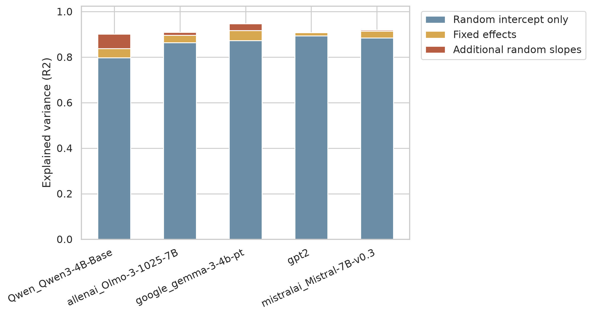
| Model | Fixed effects R2 | Random intercept only R2 | Random intercept + fixed effects R2 | Fixed-effects share within baseline explained variance | Random-intercept-only share within baseline explained variance |
|---|---|---|---|---|---|
| Qwen_Qwen3-4B-Base | 0.040 | 0.798 | 0.838 | 0.048 | 0.952 |
| allenai_Olmo-3-1025-7B | 0.032 | 0.864 | 0.896 | 0.036 | 0.964 |
| google_gemma-3-4b-pt | 0.045 | 0.872 | 0.918 | 0.049 | 0.951 |
| gpt2 | 0.014 | 0.894 | 0.908 | 0.016 | 0.984 |
| mistralai_Mistral-7B-v0.3 | 0.030 | 0.885 | 0.915 | 0.032 | 0.968 |
| Model | Random intercept + fixed effects R2 | Additional random-slope R2 | Full model with random slopes R2 | Baseline share within full explained variance | Random-slope share within full explained variance |
|---|---|---|---|---|---|
| Qwen_Qwen3-4B-Base | 0.838 | 0.064 | 0.902 | 0.929 | 0.071 |
| allenai_Olmo-3-1025-7B | 0.896 | 0.013 | 0.909 | 0.986 | 0.014 |
| google_gemma-3-4b-pt | 0.918 | 0.030 | 0.947 | 0.969 | 0.031 |
| gpt2 | 0.908 | -0.003 | 0.905 | 1.003 | -0.003 |
| mistralai_Mistral-7B-v0.3 | 0.915 | 0.005 | 0.920 | 0.995 | 0.005 |
Baseline rows are the random-intercept models generated in the same run with the selected fixed terms.
| Model | Semantic role | Syntactic role | Valence | Dominance | Total random-slope variance |
|---|---|---|---|---|---|
| Qwen_Qwen3-4B-Base | 0.030 | 0.088 | 0.007 | 0.016 | 0.140 |
| allenai_Olmo-3-1025-7B | 0.003 | 0.030 | 0.016 | 0.014 | 0.063 |
| google_gemma-3-4b-pt | 0.012 | 0.019 | 0.006 | 0.004 | 0.041 |
| gpt2 | 0.016 | 0.028 | 0.004 | 0.006 | 0.054 |
| mistralai_Mistral-7B-v0.3 | 0.004 | 0.007 | 0.011 | 0.006 | 0.028 |
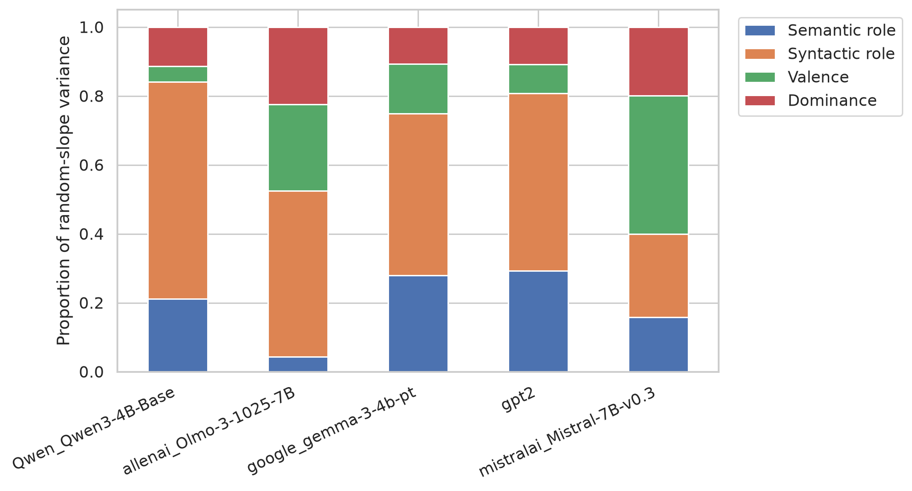
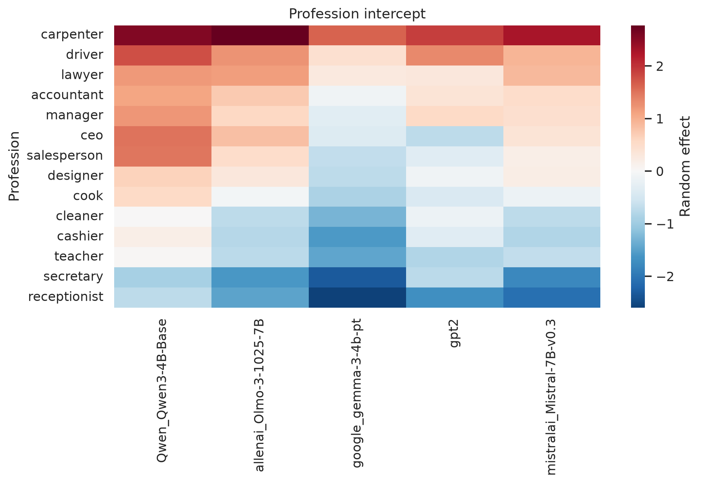
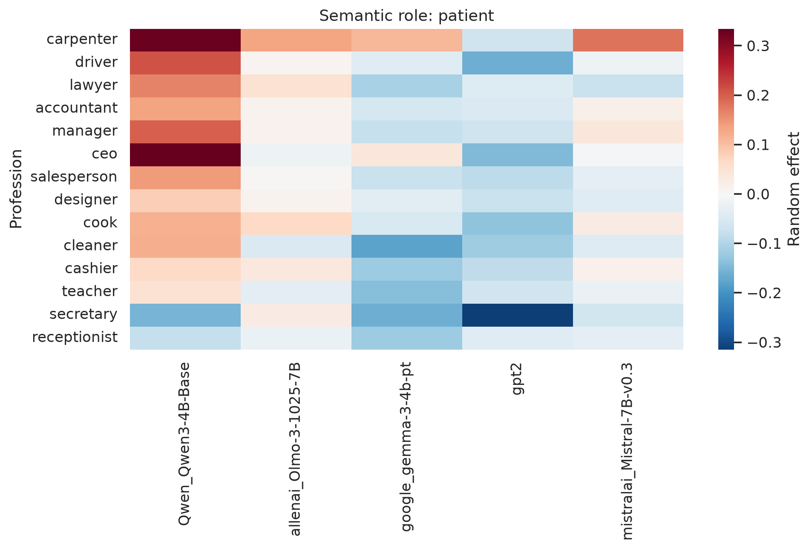
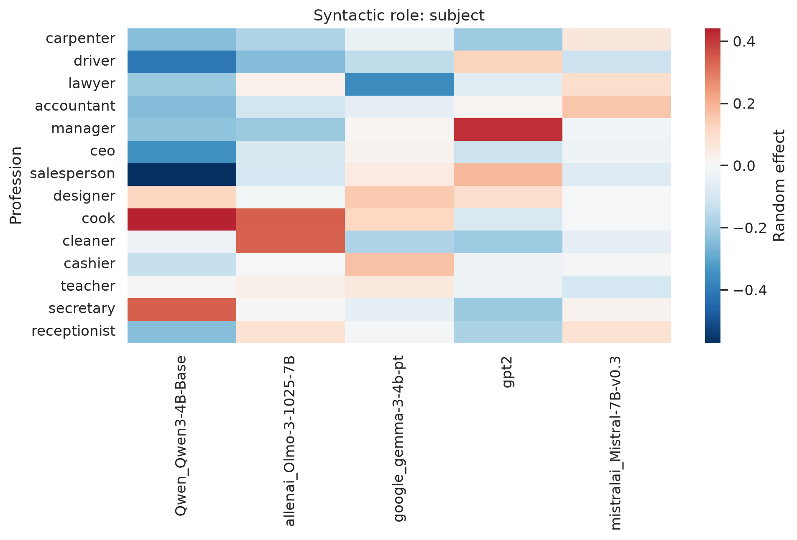
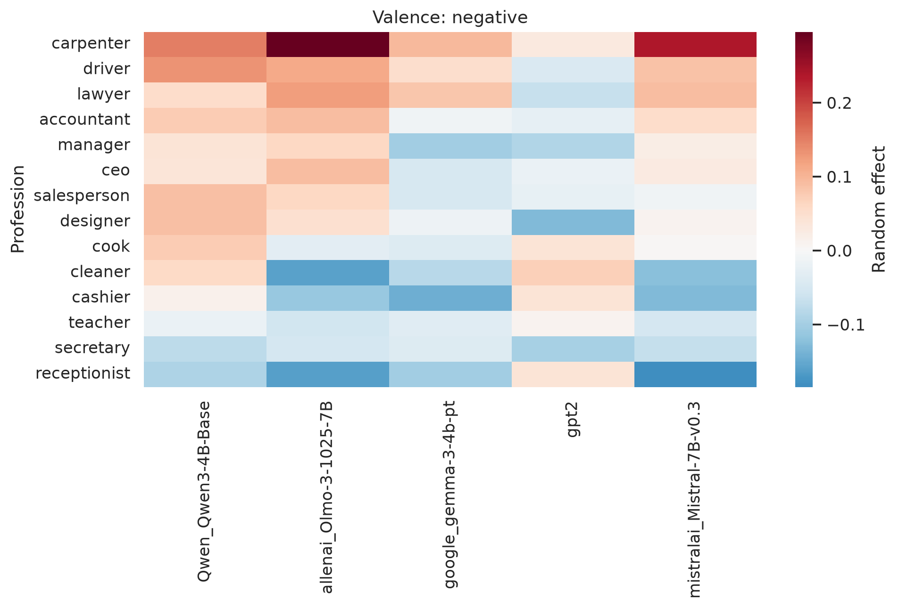
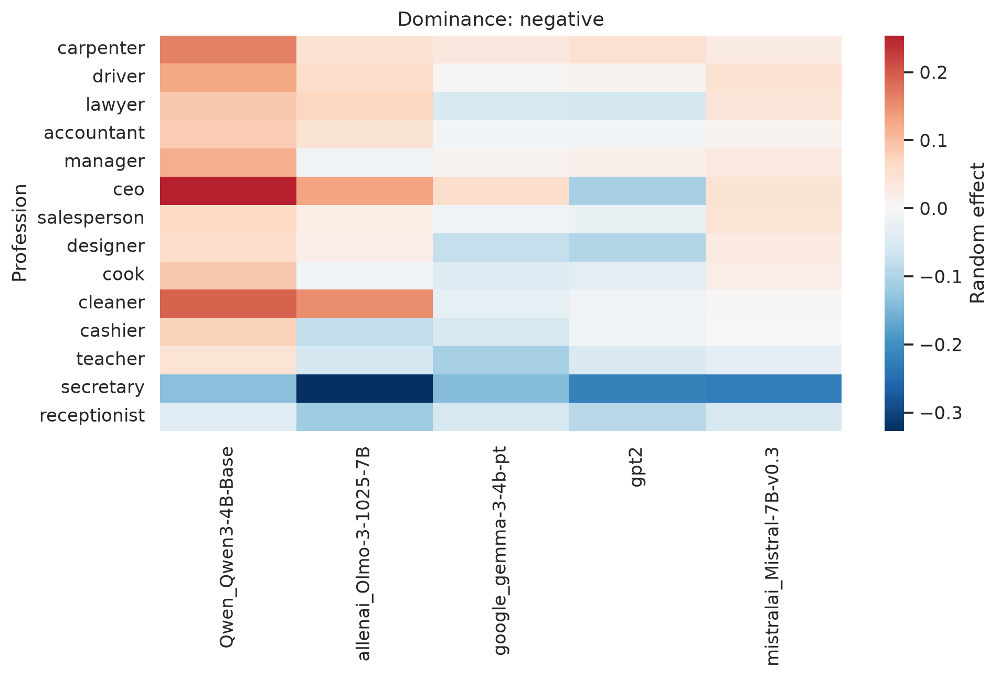
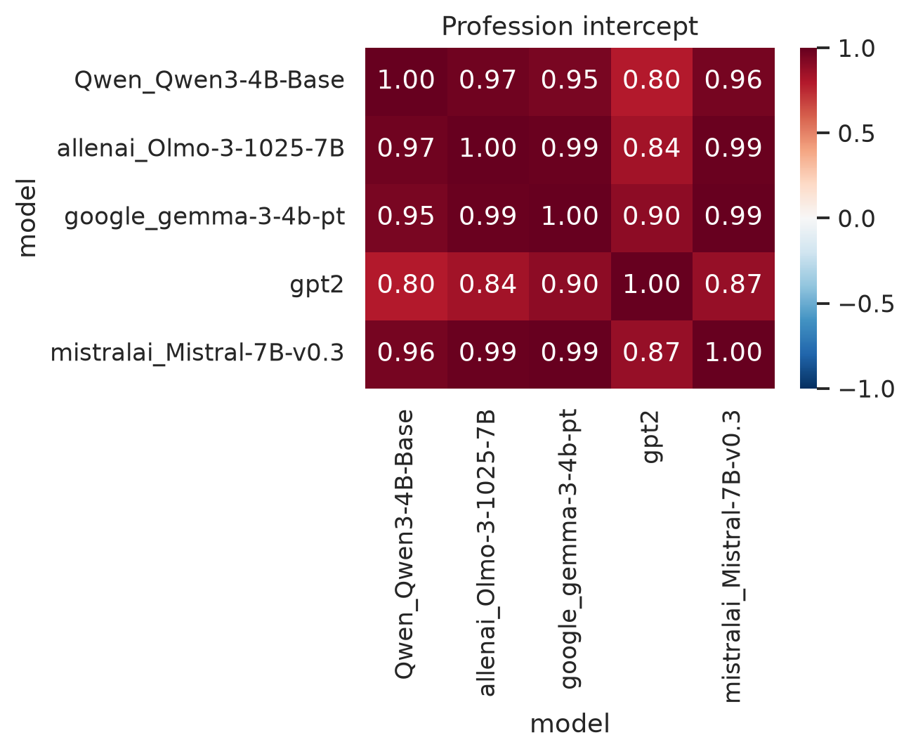
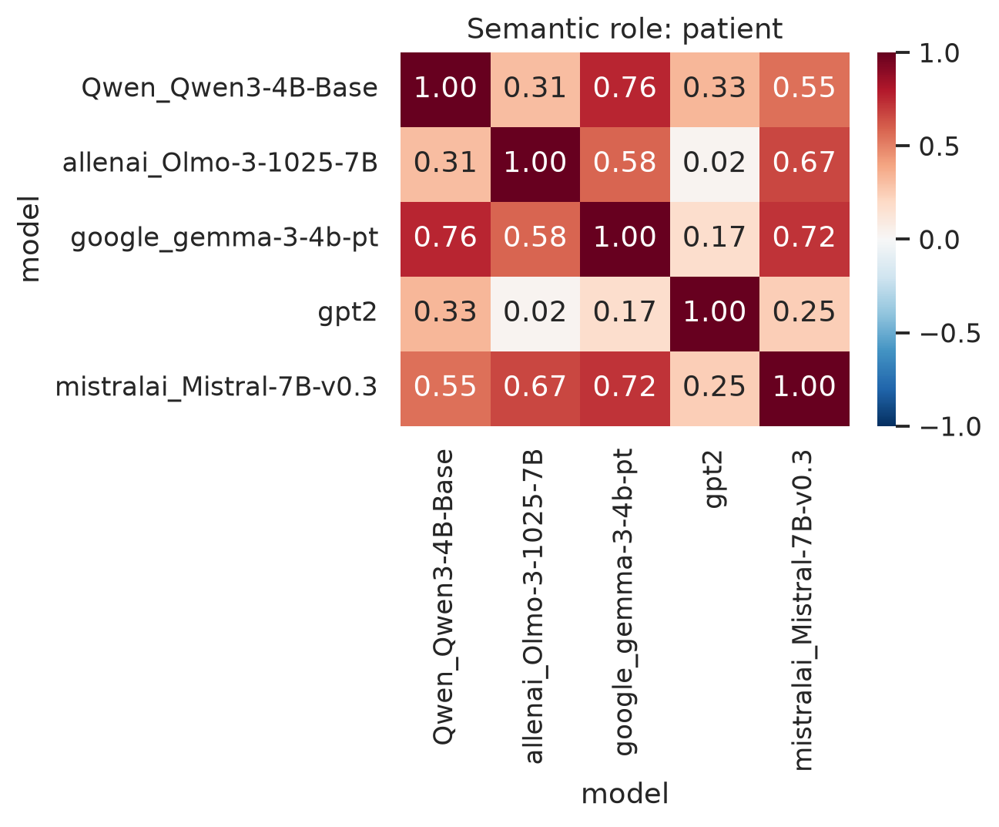
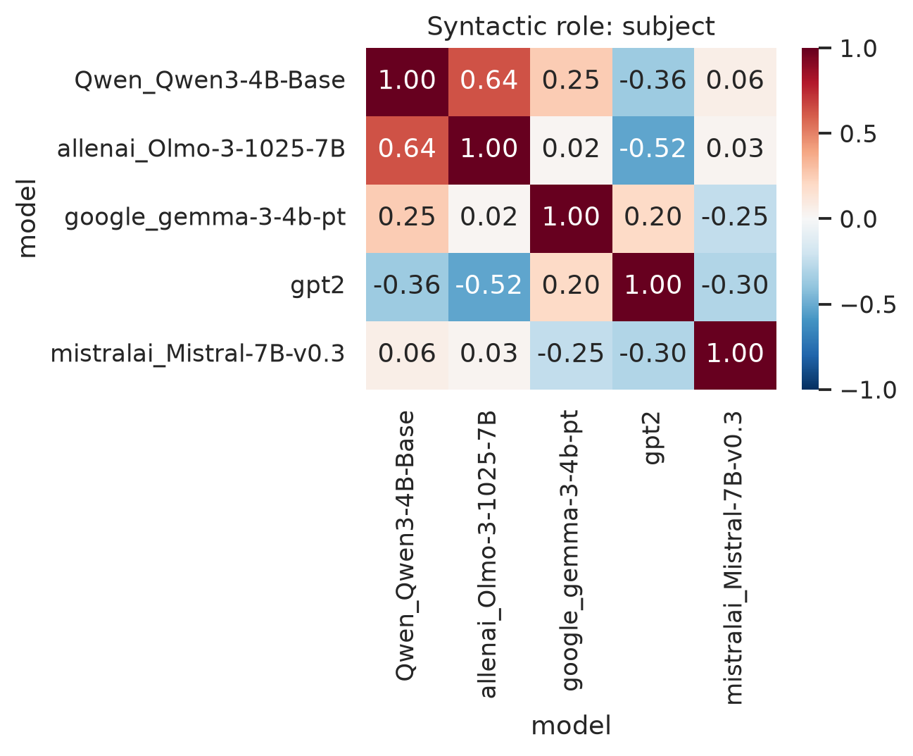
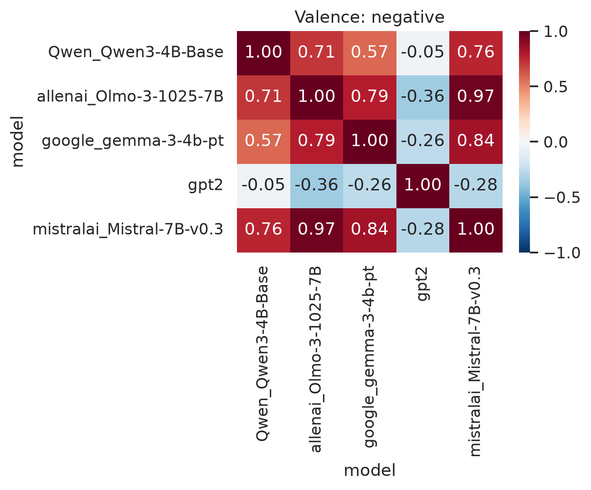
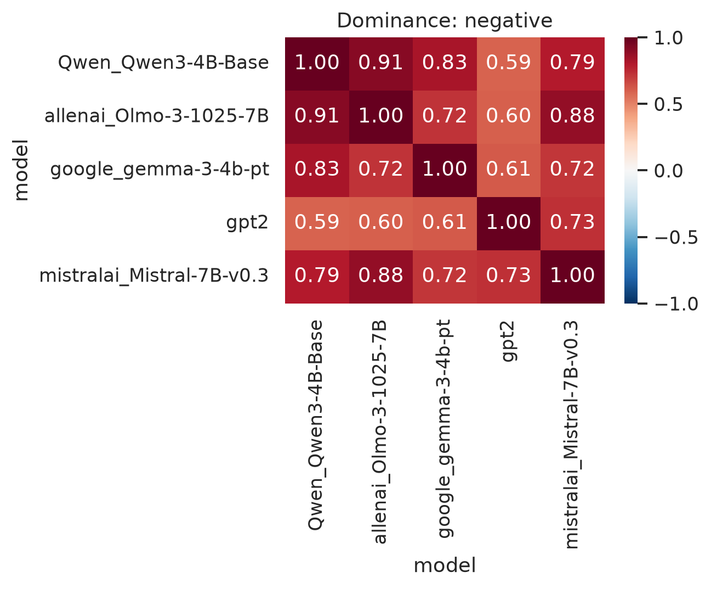
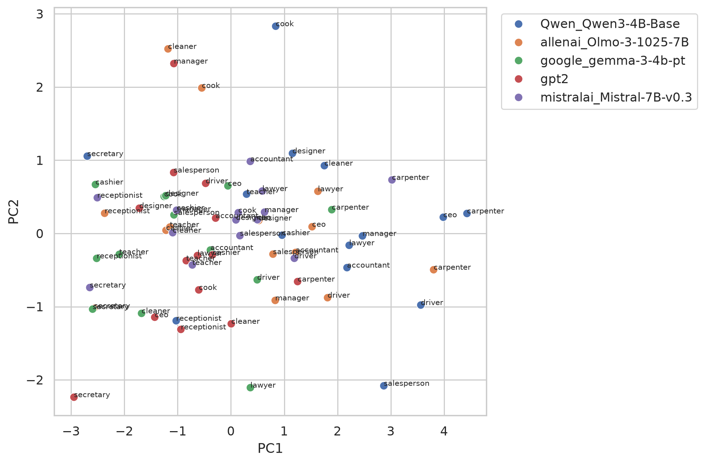
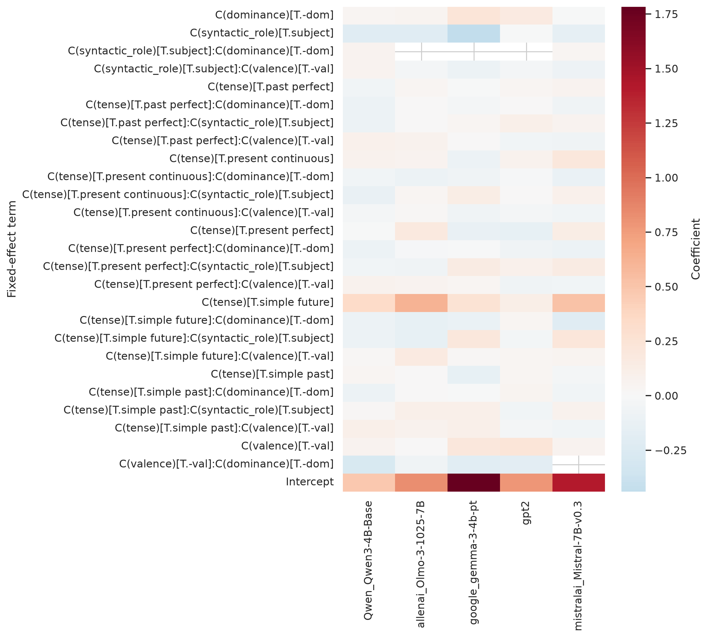
| Model | Term | Estimate | Std. error | p value | CI low | CI high |
|---|---|---|---|---|---|---|
| Qwen_Qwen3-4B-Base | C(dominance)[T.-dom] | 0.039 | 0.037 | 0.291 | -0.034 | 0.112 |
| Qwen_Qwen3-4B-Base | C(syntactic_role)[T.subject] | -0.209 | 0.098 | 0.033 | -0.401 | -0.016 |
| Qwen_Qwen3-4B-Base | C(syntactic_role)[T.subject]:C(dominance)[T.-dom] | 0.061 | 0.020 | 0.002 | 0.022 | 0.100 |
| Qwen_Qwen3-4B-Base | C(syntactic_role)[T.subject]:C(valence)[T.-val] | 0.066 | 0.020 | 0.001 | 0.027 | 0.106 |
| Qwen_Qwen3-4B-Base | C(tense)[T.past perfect] | -0.059 | 0.035 | 0.087 | -0.127 | 0.009 |
| Qwen_Qwen3-4B-Base | C(tense)[T.past perfect]:C(dominance)[T.-dom] | -0.095 | 0.035 | 0.006 | -0.163 | -0.027 |
| Qwen_Qwen3-4B-Base | C(tense)[T.past perfect]:C(syntactic_role)[T.subject] | -0.101 | 0.035 | 0.004 | -0.169 | -0.033 |
| Qwen_Qwen3-4B-Base | C(tense)[T.past perfect]:C(valence)[T.-val] | 0.093 | 0.035 | 0.007 | 0.025 | 0.161 |
| Qwen_Qwen3-4B-Base | C(tense)[T.present continuous] | 0.088 | 0.035 | 0.011 | 0.020 | 0.155 |
| Qwen_Qwen3-4B-Base | C(tense)[T.present continuous]:C(dominance)[T.-dom] | -0.050 | 0.035 | 0.147 | -0.118 | 0.018 |
| Qwen_Qwen3-4B-Base | C(tense)[T.present continuous]:C(syntactic_role)[T.subject] | -0.126 | 0.035 | 0.000 | -0.194 | -0.058 |
| Qwen_Qwen3-4B-Base | C(tense)[T.present continuous]:C(valence)[T.-val] | -0.040 | 0.035 | 0.253 | -0.107 | 0.028 |
| Qwen_Qwen3-4B-Base | C(tense)[T.present perfect] | -0.004 | 0.035 | 0.911 | -0.072 | 0.064 |
| Qwen_Qwen3-4B-Base | C(tense)[T.present perfect]:C(dominance)[T.-dom] | -0.093 | 0.035 | 0.007 | -0.161 | -0.025 |
| Qwen_Qwen3-4B-Base | C(tense)[T.present perfect]:C(syntactic_role)[T.subject] | -0.053 | 0.035 | 0.126 | -0.121 | 0.015 |
| Qwen_Qwen3-4B-Base | C(tense)[T.present perfect]:C(valence)[T.-val] | 0.089 | 0.035 | 0.010 | 0.021 | 0.157 |
| Qwen_Qwen3-4B-Base | C(tense)[T.simple future] | 0.339 | 0.035 | 0.000 | 0.271 | 0.406 |
| Qwen_Qwen3-4B-Base | C(tense)[T.simple future]:C(dominance)[T.-dom] | -0.105 | 0.035 | 0.002 | -0.173 | -0.037 |
| Qwen_Qwen3-4B-Base | C(tense)[T.simple future]:C(syntactic_role)[T.subject] | -0.109 | 0.035 | 0.002 | -0.177 | -0.041 |
| Qwen_Qwen3-4B-Base | C(tense)[T.simple future]:C(valence)[T.-val] | 0.028 | 0.035 | 0.413 | -0.039 | 0.096 |
| Qwen_Qwen3-4B-Base | C(tense)[T.simple past] | 0.039 | 0.035 | 0.258 | -0.029 | 0.107 |
| Qwen_Qwen3-4B-Base | C(tense)[T.simple past]:C(dominance)[T.-dom] | -0.096 | 0.035 | 0.006 | -0.163 | -0.028 |
| Qwen_Qwen3-4B-Base | C(tense)[T.simple past]:C(syntactic_role)[T.subject] | 0.023 | 0.035 | 0.501 | -0.044 | 0.091 |
| Qwen_Qwen3-4B-Base | C(tense)[T.simple past]:C(valence)[T.-val] | 0.115 | 0.035 | 0.001 | 0.047 | 0.182 |
| Qwen_Qwen3-4B-Base | C(valence)[T.-val] | 0.069 | 0.036 | 0.056 | -0.002 | 0.139 |
| Qwen_Qwen3-4B-Base | C(valence)[T.-val]:C(dominance)[T.-dom] | -0.278 | 0.020 | 0.000 | -0.317 | -0.238 |
| Qwen_Qwen3-4B-Base | Intercept | 0.488 | 0.186 | 0.009 | 0.122 | 0.853 |
| allenai_Olmo-3-1025-7B | C(dominance)[T.-dom] | 0.048 | 0.043 | 0.261 | -0.036 | 0.133 |
| allenai_Olmo-3-1025-7B | C(syntactic_role)[T.subject] | -0.213 | 0.056 | 0.000 | -0.324 | -0.103 |
| allenai_Olmo-3-1025-7B | C(syntactic_role)[T.subject]:C(valence)[T.-val] | -0.035 | 0.019 | 0.068 | -0.074 | 0.003 |
| allenai_Olmo-3-1025-7B | C(tense)[T.past perfect] | 0.041 | 0.034 | 0.222 | -0.025 | 0.107 |
| allenai_Olmo-3-1025-7B | C(tense)[T.past perfect]:C(dominance)[T.-dom] | 0.018 | 0.034 | 0.600 | -0.048 | 0.084 |
| allenai_Olmo-3-1025-7B | C(tense)[T.past perfect]:C(syntactic_role)[T.subject] | 0.005 | 0.034 | 0.890 | -0.061 | 0.071 |
| allenai_Olmo-3-1025-7B | C(tense)[T.past perfect]:C(valence)[T.-val] | 0.081 | 0.034 | 0.015 | 0.016 | 0.147 |
| allenai_Olmo-3-1025-7B | C(tense)[T.present continuous] | 0.071 | 0.034 | 0.036 | 0.005 | 0.136 |
| allenai_Olmo-3-1025-7B | C(tense)[T.present continuous]:C(dominance)[T.-dom] | -0.102 | 0.034 | 0.002 | -0.168 | -0.036 |
| allenai_Olmo-3-1025-7B | C(tense)[T.present continuous]:C(syntactic_role)[T.subject] | 0.045 | 0.034 | 0.183 | -0.021 | 0.111 |
| allenai_Olmo-3-1025-7B | C(tense)[T.present continuous]:C(valence)[T.-val] | 0.025 | 0.034 | 0.463 | -0.041 | 0.091 |
| allenai_Olmo-3-1025-7B | C(tense)[T.present perfect] | 0.182 | 0.034 | 0.000 | 0.116 | 0.247 |
| allenai_Olmo-3-1025-7B | C(tense)[T.present perfect]:C(dominance)[T.-dom] | -0.022 | 0.034 | 0.511 | -0.088 | 0.044 |
| allenai_Olmo-3-1025-7B | C(tense)[T.present perfect]:C(syntactic_role)[T.subject] | -0.077 | 0.034 | 0.022 | -0.143 | -0.011 |
| allenai_Olmo-3-1025-7B | C(tense)[T.present perfect]:C(valence)[T.-val] | 0.071 | 0.034 | 0.034 | 0.005 | 0.137 |
| allenai_Olmo-3-1025-7B | C(tense)[T.simple future] | 0.622 | 0.034 | 0.000 | 0.556 | 0.688 |
| allenai_Olmo-3-1025-7B | C(tense)[T.simple future]:C(dominance)[T.-dom] | -0.149 | 0.034 | 0.000 | -0.215 | -0.084 |
| allenai_Olmo-3-1025-7B | C(tense)[T.simple future]:C(syntactic_role)[T.subject] | -0.148 | 0.034 | 0.000 | -0.214 | -0.082 |
| allenai_Olmo-3-1025-7B | C(tense)[T.simple future]:C(valence)[T.-val] | 0.163 | 0.034 | 0.000 | 0.097 | 0.229 |
| allenai_Olmo-3-1025-7B | C(tense)[T.simple past] | 0.015 | 0.034 | 0.648 | -0.051 | 0.081 |
| allenai_Olmo-3-1025-7B | C(tense)[T.simple past]:C(dominance)[T.-dom] | 0.012 | 0.034 | 0.717 | -0.054 | 0.078 |
| allenai_Olmo-3-1025-7B | C(tense)[T.simple past]:C(syntactic_role)[T.subject] | 0.112 | 0.034 | 0.001 | 0.046 | 0.178 |
| allenai_Olmo-3-1025-7B | C(tense)[T.simple past]:C(valence)[T.-val] | 0.086 | 0.034 | 0.011 | 0.020 | 0.151 |
| allenai_Olmo-3-1025-7B | C(valence)[T.-val] | 0.007 | 0.043 | 0.867 | -0.076 | 0.091 |
| allenai_Olmo-3-1025-7B | C(valence)[T.-val]:C(dominance)[T.-dom] | -0.083 | 0.019 | 0.000 | -0.121 | -0.045 |
| allenai_Olmo-3-1025-7B | Intercept | 0.823 | 0.305 | 0.007 | 0.225 | 1.421 |
| google_gemma-3-4b-pt | C(dominance)[T.-dom] | 0.233 | 0.028 | 0.000 | 0.177 | 0.289 |
| google_gemma-3-4b-pt | C(syntactic_role)[T.subject] | -0.440 | 0.056 | 0.000 | -0.550 | -0.329 |
| google_gemma-3-4b-pt | C(syntactic_role)[T.subject]:C(valence)[T.-val] | -0.093 | 0.016 | 0.000 | -0.124 | -0.061 |
| google_gemma-3-4b-pt | C(tense)[T.past perfect] | -0.001 | 0.028 | 0.969 | -0.056 | 0.054 |
| google_gemma-3-4b-pt | C(tense)[T.past perfect]:C(dominance)[T.-dom] | -0.032 | 0.028 | 0.260 | -0.086 | 0.023 |
| google_gemma-3-4b-pt | C(tense)[T.past perfect]:C(syntactic_role)[T.subject] | 0.034 | 0.028 | 0.227 | -0.021 | 0.089 |
| google_gemma-3-4b-pt | C(tense)[T.past perfect]:C(valence)[T.-val] | 0.017 | 0.028 | 0.540 | -0.038 | 0.072 |
| google_gemma-3-4b-pt | C(tense)[T.present continuous] | -0.101 | 0.028 | 0.000 | -0.155 | -0.046 |
| google_gemma-3-4b-pt | C(tense)[T.present continuous]:C(dominance)[T.-dom] | -0.083 | 0.028 | 0.003 | -0.138 | -0.028 |
| google_gemma-3-4b-pt | C(tense)[T.present continuous]:C(syntactic_role)[T.subject] | 0.135 | 0.028 | 0.000 | 0.080 | 0.190 |
| google_gemma-3-4b-pt | C(tense)[T.present continuous]:C(valence)[T.-val] | -0.070 | 0.028 | 0.013 | -0.125 | -0.015 |
| google_gemma-3-4b-pt | C(tense)[T.present perfect] | -0.120 | 0.028 | 0.000 | -0.175 | -0.065 |
| google_gemma-3-4b-pt | C(tense)[T.present perfect]:C(dominance)[T.-dom] | -0.007 | 0.028 | 0.796 | -0.062 | 0.048 |
| google_gemma-3-4b-pt | C(tense)[T.present perfect]:C(syntactic_role)[T.subject] | 0.145 | 0.028 | 0.000 | 0.090 | 0.200 |
| google_gemma-3-4b-pt | C(tense)[T.present perfect]:C(valence)[T.-val] | 0.040 | 0.028 | 0.151 | -0.015 | 0.095 |
| google_gemma-3-4b-pt | C(tense)[T.simple future] | 0.256 | 0.028 | 0.000 | 0.201 | 0.311 |
| google_gemma-3-4b-pt | C(tense)[T.simple future]:C(dominance)[T.-dom] | -0.112 | 0.028 | 0.000 | -0.167 | -0.057 |
| google_gemma-3-4b-pt | C(tense)[T.simple future]:C(syntactic_role)[T.subject] | 0.208 | 0.028 | 0.000 | 0.153 | 0.263 |
| google_gemma-3-4b-pt | C(tense)[T.simple future]:C(valence)[T.-val] | 0.027 | 0.028 | 0.337 | -0.028 | 0.082 |
| google_gemma-3-4b-pt | C(tense)[T.simple past] | -0.144 | 0.028 | 0.000 | -0.199 | -0.089 |
| google_gemma-3-4b-pt | C(tense)[T.simple past]:C(dominance)[T.-dom] | -0.000 | 0.028 | 0.990 | -0.055 | 0.055 |
| google_gemma-3-4b-pt | C(tense)[T.simple past]:C(syntactic_role)[T.subject] | 0.105 | 0.028 | 0.000 | 0.050 | 0.160 |
| google_gemma-3-4b-pt | C(tense)[T.simple past]:C(valence)[T.-val] | 0.108 | 0.028 | 0.000 | 0.053 | 0.163 |
| google_gemma-3-4b-pt | C(valence)[T.-val] | 0.201 | 0.034 | 0.000 | 0.134 | 0.267 |
| google_gemma-3-4b-pt | C(valence)[T.-val]:C(dominance)[T.-dom] | -0.202 | 0.016 | 0.000 | -0.233 | -0.170 |
| google_gemma-3-4b-pt | Intercept | 1.784 | 0.304 | 0.000 | 1.189 | 2.378 |
| gpt2 | C(dominance)[T.-dom] | 0.162 | 0.033 | 0.000 | 0.099 | 0.226 |
| gpt2 | C(syntactic_role)[T.subject] | 0.002 | 0.079 | 0.975 | -0.152 | 0.157 |
| gpt2 | C(syntactic_role)[T.subject]:C(valence)[T.-val] | -0.031 | 0.013 | 0.023 | -0.057 | -0.004 |
| gpt2 | C(tense)[T.past perfect] | 0.031 | 0.023 | 0.180 | -0.014 | 0.077 |
| gpt2 | C(tense)[T.past perfect]:C(dominance)[T.-dom] | 0.015 | 0.023 | 0.528 | -0.031 | 0.060 |
| gpt2 | C(tense)[T.past perfect]:C(syntactic_role)[T.subject] | 0.113 | 0.023 | 0.000 | 0.068 | 0.159 |
| gpt2 | C(tense)[T.past perfect]:C(valence)[T.-val] | -0.063 | 0.023 | 0.007 | -0.108 | -0.017 |
| gpt2 | C(tense)[T.present continuous] | 0.081 | 0.023 | 0.001 | 0.035 | 0.126 |
| gpt2 | C(tense)[T.present continuous]:C(dominance)[T.-dom] | -0.020 | 0.023 | 0.394 | -0.066 | 0.026 |
| gpt2 | C(tense)[T.present continuous]:C(syntactic_role)[T.subject] | 0.004 | 0.023 | 0.853 | -0.041 | 0.050 |
| gpt2 | C(tense)[T.present continuous]:C(valence)[T.-val] | -0.035 | 0.023 | 0.138 | -0.080 | 0.011 |
| gpt2 | C(tense)[T.present perfect] | -0.138 | 0.023 | 0.000 | -0.183 | -0.092 |
| gpt2 | C(tense)[T.present perfect]:C(dominance)[T.-dom] | -0.067 | 0.023 | 0.004 | -0.112 | -0.021 |
| gpt2 | C(tense)[T.present perfect]:C(syntactic_role)[T.subject] | 0.092 | 0.023 | 0.000 | 0.046 | 0.137 |
| gpt2 | C(tense)[T.present perfect]:C(valence)[T.-val] | -0.067 | 0.023 | 0.004 | -0.113 | -0.021 |
| gpt2 | C(tense)[T.simple future] | 0.119 | 0.023 | 0.000 | 0.073 | 0.165 |
| gpt2 | C(tense)[T.simple future]:C(dominance)[T.-dom] | 0.032 | 0.023 | 0.171 | -0.014 | 0.078 |
| gpt2 | C(tense)[T.simple future]:C(syntactic_role)[T.subject] | -0.040 | 0.023 | 0.083 | -0.086 | 0.005 |
| gpt2 | C(tense)[T.simple future]:C(valence)[T.-val] | 0.040 | 0.023 | 0.085 | -0.006 | 0.086 |
| gpt2 | C(tense)[T.simple past] | 0.033 | 0.023 | 0.159 | -0.013 | 0.079 |
| gpt2 | C(tense)[T.simple past]:C(dominance)[T.-dom] | 0.048 | 0.023 | 0.041 | 0.002 | 0.093 |
| gpt2 | C(tense)[T.simple past]:C(syntactic_role)[T.subject] | -0.057 | 0.023 | 0.015 | -0.103 | -0.011 |
| gpt2 | C(tense)[T.simple past]:C(valence)[T.-val] | -0.033 | 0.023 | 0.160 | -0.078 | 0.013 |
| gpt2 | C(valence)[T.-val] | 0.232 | 0.045 | 0.000 | 0.145 | 0.319 |
| gpt2 | C(valence)[T.-val]:C(dominance)[T.-dom] | -0.187 | 0.013 | 0.000 | -0.213 | -0.161 |
| gpt2 | Intercept | 0.792 | 0.310 | 0.011 | 0.183 | 1.400 |
| mistralai_Mistral-7B-v0.3 | C(dominance)[T.-dom] | -0.003 | 0.030 | 0.910 | -0.063 | 0.056 |
| mistralai_Mistral-7B-v0.3 | C(syntactic_role)[T.subject] | -0.159 | 0.033 | 0.000 | -0.224 | -0.094 |
| mistralai_Mistral-7B-v0.3 | C(syntactic_role)[T.subject]:C(dominance)[T.-dom] | 0.034 | 0.017 | 0.051 | -0.000 | 0.068 |
| mistralai_Mistral-7B-v0.3 | C(syntactic_role)[T.subject]:C(valence)[T.-val] | -0.085 | 0.017 | 0.000 | -0.119 | -0.050 |
| mistralai_Mistral-7B-v0.3 | C(tense)[T.past perfect] | 0.058 | 0.030 | 0.054 | -0.001 | 0.117 |
| mistralai_Mistral-7B-v0.3 | C(tense)[T.past perfect]:C(dominance)[T.-dom] | -0.080 | 0.030 | 0.008 | -0.139 | -0.021 |
| mistralai_Mistral-7B-v0.3 | C(tense)[T.past perfect]:C(syntactic_role)[T.subject] | 0.064 | 0.030 | 0.035 | 0.005 | 0.123 |
| mistralai_Mistral-7B-v0.3 | C(tense)[T.past perfect]:C(valence)[T.-val] | -0.071 | 0.030 | 0.019 | -0.130 | -0.012 |
| mistralai_Mistral-7B-v0.3 | C(tense)[T.present continuous] | 0.199 | 0.030 | 0.000 | 0.139 | 0.258 |
| mistralai_Mistral-7B-v0.3 | C(tense)[T.present continuous]:C(dominance)[T.-dom] | -0.111 | 0.030 | 0.000 | -0.171 | -0.052 |
| mistralai_Mistral-7B-v0.3 | C(tense)[T.present continuous]:C(syntactic_role)[T.subject] | 0.099 | 0.030 | 0.001 | 0.039 | 0.158 |
| mistralai_Mistral-7B-v0.3 | C(tense)[T.present continuous]:C(valence)[T.-val] | -0.065 | 0.030 | 0.032 | -0.124 | -0.006 |
| mistralai_Mistral-7B-v0.3 | C(tense)[T.present perfect] | 0.125 | 0.030 | 0.000 | 0.066 | 0.184 |
| mistralai_Mistral-7B-v0.3 | C(tense)[T.present perfect]:C(dominance)[T.-dom] | -0.098 | 0.030 | 0.001 | -0.157 | -0.039 |
| mistralai_Mistral-7B-v0.3 | C(tense)[T.present perfect]:C(syntactic_role)[T.subject] | 0.148 | 0.030 | 0.000 | 0.088 | 0.207 |
| mistralai_Mistral-7B-v0.3 | C(tense)[T.present perfect]:C(valence)[T.-val] | -0.060 | 0.030 | 0.046 | -0.120 | -0.001 |
| mistralai_Mistral-7B-v0.3 | C(tense)[T.simple future] | 0.525 | 0.030 | 0.000 | 0.466 | 0.584 |
| mistralai_Mistral-7B-v0.3 | C(tense)[T.simple future]:C(dominance)[T.-dom] | -0.219 | 0.030 | 0.000 | -0.278 | -0.160 |
| mistralai_Mistral-7B-v0.3 | C(tense)[T.simple future]:C(syntactic_role)[T.subject] | 0.228 | 0.030 | 0.000 | 0.169 | 0.287 |
| mistralai_Mistral-7B-v0.3 | C(tense)[T.simple future]:C(valence)[T.-val] | 0.050 | 0.030 | 0.100 | -0.010 | 0.109 |
| mistralai_Mistral-7B-v0.3 | C(tense)[T.simple past] | -0.028 | 0.030 | 0.357 | -0.087 | 0.031 |
| mistralai_Mistral-7B-v0.3 | C(tense)[T.simple past]:C(dominance)[T.-dom] | -0.055 | 0.030 | 0.068 | -0.114 | 0.004 |
| mistralai_Mistral-7B-v0.3 | C(tense)[T.simple past]:C(syntactic_role)[T.subject] | 0.079 | 0.030 | 0.009 | 0.020 | 0.139 |
| mistralai_Mistral-7B-v0.3 | C(tense)[T.simple past]:C(valence)[T.-val] | -0.059 | 0.030 | 0.052 | -0.118 | 0.001 |
| mistralai_Mistral-7B-v0.3 | C(valence)[T.-val] | 0.068 | 0.034 | 0.047 | 0.001 | 0.135 |
| mistralai_Mistral-7B-v0.3 | Intercept | 1.403 | 0.260 | 0.000 | 0.894 | 1.911 |